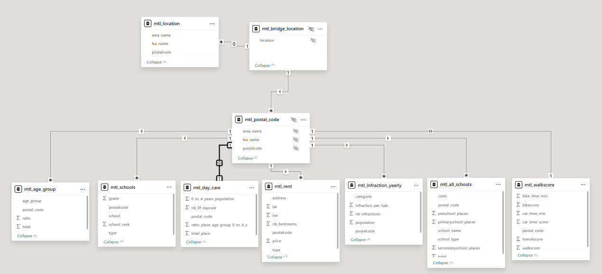

Data Pipeline, Exploratory Phase, and KPIs
Data Pipeline Architecture and Transformation Layers
In my project, the data pipeline is organized into four transformation layers: Bronze, Silver, Gold, and Presentation. Each layer has a specific role in ensuring data quality, scalability, and usability for analytics and BI consumption.
Data Ingestion – Raw and Bronze Layers
- Copy activity to ingest data into the raw folder.
- Copy activity to move and create tables in the Bronze layer.
- Notebook activity to web scrape rental data, store it in the raw folder, and generate the Bronze table.
Data Transformation – Silver and Gold Layers
- Spark SQL notebooks for data transformations.
- Python notebooks for complex transformations, such as linking infractions data to postal codes.
- Spark SQL notebooks to summarize, aggregate, and categorize data.
Data Presentation – Presentation Layer and Semantic Model
- Spark SQL notebooks to create tables in the Presentation layer.
- Semantic model connected to the Presentation layer using Direct Lake mode.
- Direct Lake leverages VertiPaq for fast analytics while optimizing queries for large-scale data.
Layer Definitions
Bronze Layer (Raw Ingestion)
The Bronze layer ingests data directly from the raw source folders. At this stage, only the necessary columns are selected and loaded, without applying any transformations. No data cleansing or business logic is applied.
Target users: Data engineers, IT department
Silver Layer (Data Cleansing and Business Rules)
The Silver layer is where the first and most significant transformations occur:
- Duplicate records (such as repeated advertisements) are removed
- Null values are either eliminated or replaced with meaningful defaults
- Data inconsistencies and ambiguities are identified and treated
- Business rules are applied, such as linking each advertisement to its corresponding neighborhood
Target users: Data engineers
Gold Layer (Analytical Data Model)
The Gold layer serves as the foundation for the analytical data model:
- Fact and Dimension tables are clearly defined
- Aggregations and summarizations are created
- Statistical analyses are applied to identify and remove outliers, reducing bias in the results
Target users: Data scientists, data analysts, data engineers
Presentation Layer (BI-Optimized Model)
The Presentation layer is built on top of the Gold layer to better support BI tools such as Power BI:
- Create a data model optimized for specific project and reporting needs
- Apply additional aggregations and filters
- Build tailored tables to address project-specific requirements
Target users: Data analysts, business analysts
Data Pipeline Tables
Rental Data Statistical Analysis and Outlier Treatment
The outlier removal process runs weekly during the data refresh cycle. Listings with values below the 1st percentile or above the 99th percentile are excluded, as well as advertisements missing the number of bedrooms. This approach helps ensure reliable statistics and minimizes distortion caused by extreme or incomplete values.
KPIs and Method Used
The objective of the dashboard is to support users in selecting the most suitable location in Montreal based on their individual priorities. The following KPIs evaluate each borough against key criteria related to affordability, safety, accessibility, and public services:
- Average of Price
- Infraction ratio per 1,000 habitants
- Average of walk score
- Average of transit score
- Average of commute time score*
- School place ratio per 5 to 19 years old habitants aged
- Secondary school grade
- Day care ratio per 0 to 4 years old habitants aged
KPI Methodology
The Island of Montreal is divided by locations. Each location is ranked from 1 to number of locations for each evaluation criterion. To standardize comparisons across locations, the ranks are normalized by dividing them by the total number of locations.
The scores are calculated dynamically in Power BI using DAX expressions, allowing results to automatically adapt to user selections and filter context. Users can assign a relevance level to each criterion, ranging from zero (not relevant) to high relevance. These relevance levels are used as weights in the calculation of the final location score.
At the end of the calculation, the dashboard will highlight the top three locations, ranked from 1 to 3. The number 1 location represents the best choice for the user, based on the weighted relevance of the selected criteria.
Data Pipeline Summary
| Raw Data | Description | Data Source | Link |
|---|---|---|---|
| Rental Data | A Spark notebook runs a web scrape collecting data from Kijiji and saving into the raw folder | Kijiji | https://www.kijiji.ca/ |
| Montreal Infractions | Number of infractions registered in Montreal | Montreal Open Data | https://donnees.montreal.ca/ |
| Census Data | Population by Montreal postal code with age group | Statistics Canada | https://www12.statcan.gc.ca |
| Walk and Transit Score | Walkability and transit score data | Walkscore | https://www.walkscore.com/ |
| Commute Time | Open geodata used to calculate travel time | HeiGit | https://heigit.org/ |
| Daycare | Data about the number of places by daycare | Quebec Open Data | https://www.donneesquebec.ca/ |
| Schools | Enrolled students by school + secondary school evaluation (grade) | Quebec Open Data / Fraser Institute | https://www.donneesquebec.ca/ · https://www.fraserinstitute.org/ |
Semantic Model – Star Schema
Dimension table: mtl_locations
Fact tables:
- mtl_rent
- mtl_infraction_year
- mtl_age_group
- mtl_walkscore_commute_time
- mtl_daycare
- mtl_schools
The dimension table is linked to the fact tables via postal codes, which are grouped into locations.
